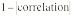
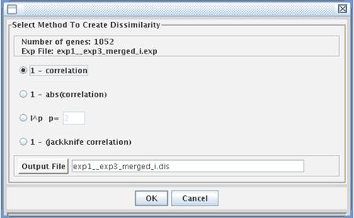

(12) Calculate dissimilarities
To form clusters of similar genes you need a way to compare the expression profiles of different genes. In this step, you will generate a huge table of "dissimilarities," measuring the difference between every pair of gene expression patterns. This step can take a very long time for a large number of genes. Be sure you have filtered your data suitably, and that you know you will learn something from the clustering process before you begin this step. Under the Expression menu, choose "Dissimilarities" and then "compute". When you do this, a window will appear where you have to choose from three choices. This is another decision that will affect the data analysis.The most common method is the default, which is 1 - correlation. The second method, 1 - abs(correlation), or , is similar to the 1 - correlation method, but the absolute value of the correlation coefficient is taken before that number is subtracted from 1. This method can give you a measure of how closely related genes appear to be without regard for if the correlation is positive or negative. The other two methods are described in the Instructor's Guide. When this step is complete, MAGIC Tool generates a dissimilarity file, which you can name in the output file box. The file will automatically be given the suffix ".dis". Click on OK to begin the computation process. The progress is monitored in a popup scale bar (not shown here). You can calculate dissimilarities on any expression file (.exp) but you should use your transformed ratios rather than non-transformed ratios. You can also use transformed and normalized expression files containing absolute expression values. Because correlation and distance calculations have no meaning if you have fewer than three columns, you will not be able to calculate dissimilarities if you have two or fewer columns. |
 |